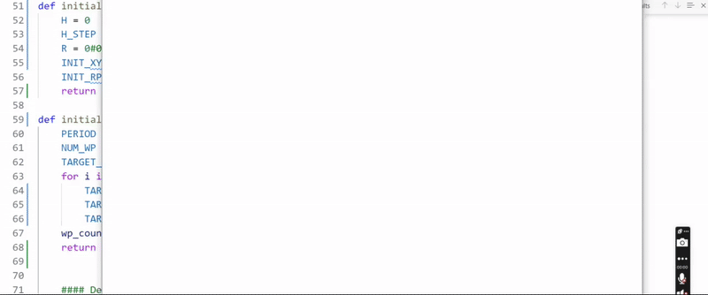

I am a recent Master Graduate of Neurorobotics from TU Chemnitz, Germany. Previousely I studied Mechatronics at the German University in Cairo.
My interestes are mainly in robotics and AI.
Master Thesis: A bio-inspired method for autonomous navigation using models from the insect brain
In this project I combined a model for the optic lobes of the fruit fly (Drosopphila melanogaster) with a model for the Central Complex of the sweat bee (Megalopta genalis). The optic lobes provide visual processing, while the Central Complex keeps track of the heading. Thus, combining these two models could serve as a bio inspired approach for visual navigation. I implemented this in a mobile robot, both in a real robot and in Simulation.
The animation below shows a test case in a simulated environment. The robot is placed in a square hall, with high contrast walls. The three veiws shown below are the camera inputs that the mobile robot sees (two cameras pointing left and right at a 45 degree angle from the center line, and a camera in the center showing you what the robot sees straight ahead).
Initially the robot is placed in the center of the square hall and pushed forward in a random direction (the red path shown). Then we allow the signal from the central complex to take over the steering of the robot, which leads it back to where it started (blue path).

An artificial voxel based worm with contractions generated by a spiking neuron model
Spiking neuron models are able to more closely match biologicial neurons in their output signal. Networks built from spiking neurons, called Spiking Neural Networks (SNNs), have alot of advantages over traditional Artificial Neural Networks (ANNs) in terms of increased efficiency in energy consumption.
A basic model for a spiking neuron is the izhikevich neuron, which can generate spikes in various patterns depending on how it's parameters are tuned.
I implemented this model to generate the contractions in a simple voxel worm, shown above. Each square unit is an artificial muscle unit that can contract and relax. By generate syncronized contractions, you can get this simple artifical creature to move in certain ways, or react when given a stimuli.
This serves as a basic example of how robots built with bio-inspired approaches can start to mimic the behavior of living organisms.

Building a mobile robot from scratch
A mobile robot I built from scratch, with the goal of being used in the Master thesis project above. Later I changed the wheel configuration and added two cameras in the front to serve as the visual input to the optic lobe model.

An end-to end trained sparse recurrent neural network to achieve lane keeping
In this project I replicated the results from Mathias Lechner's paper where they developed a system similar to Nvidia's Dave2 using convolutional neural networks (CNNs) to achieve lane keeping in an autonomous car. The difference in Mathais's approach is the introduction of new neuron units inspired from the C. Elegans worm, which results in a much sparser network while retaining performance.
As a learning challenge I replicated their results in simulation, for this I used Udacity's simulator from their autonomous driving course.

Writing a model predictive controller to achieve fault tolerance in a quadrotor
In this project I wrote the code for a model predictive controller to control a quadrotor. In the animation below, two of the four rotors are disabled, which leads to a loss of yaw control (the quadrotor will start spinnning around itself). However, the position and elevation of the quadrotor are still controllable by the MPC, thus the drone can still take off and land safely in the case of a motor failure (or even two).

ROS Controlled mobile robot
In this project I built another mobile robot from scratch, powered by a Raspberry Pi 3 running ROS2 and performing trajectory planning. Sensor fusion was done with a Kalman Filter where I used the wheel encoders as well as the IMU to estimate the position of the robot.
Bachelor thesis: Implemented a particle filter to estimate the elevation of a hand in a virtual orchestra device
In this project at Hochschule Heilbronn I implemented a particle filter to estimate the elevation of a user's hand. The virtual orchestra device had a screen playing a pre-recorded orchestra with a micro radar sensor placed under the hand of the user. As the user would wave his hand, the orchestra video would be sped up or slowed down to match the tempo of the hand. My contribution to the project was to implement a particle filter for estimating the position of the hand and syncing up the video with the correct tempo and down beat.